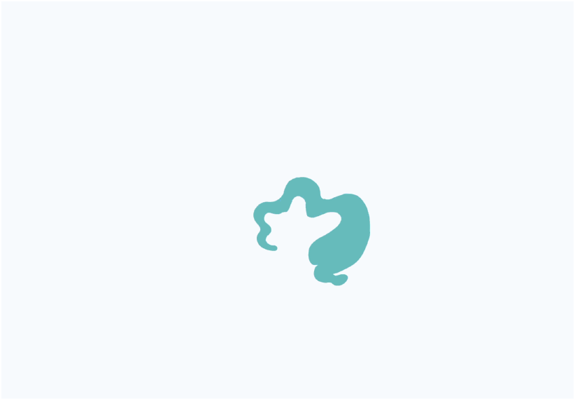
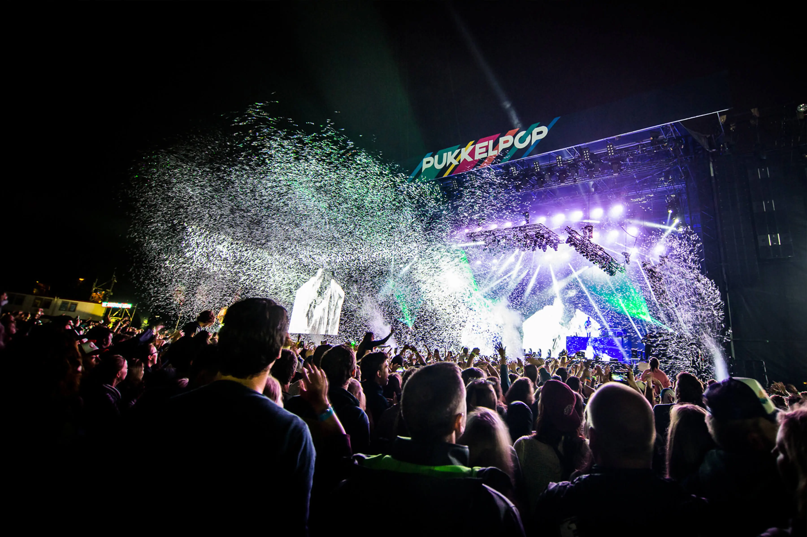
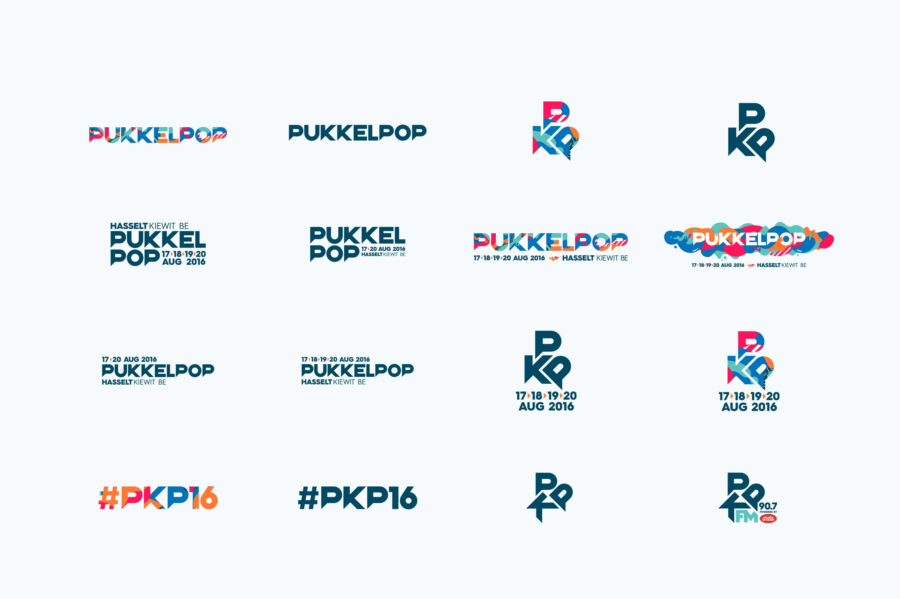
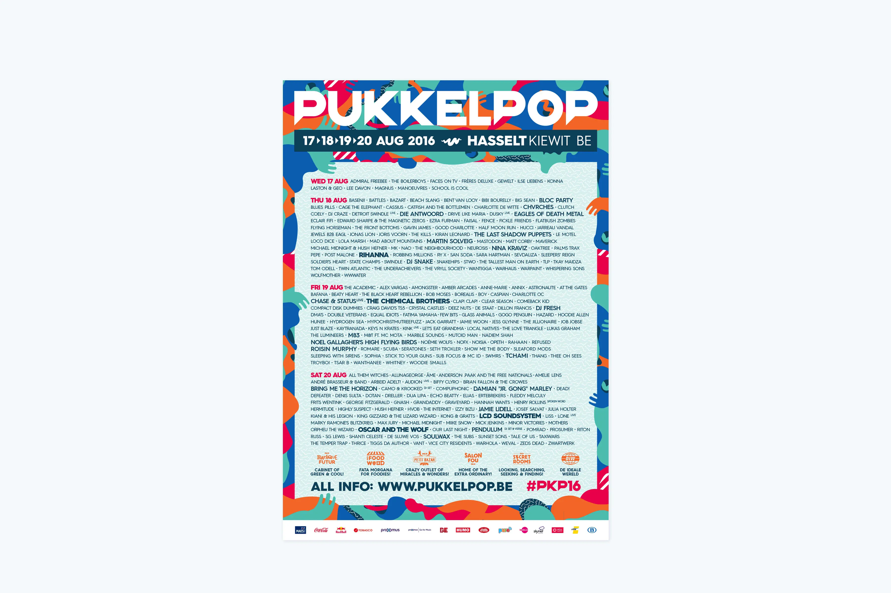
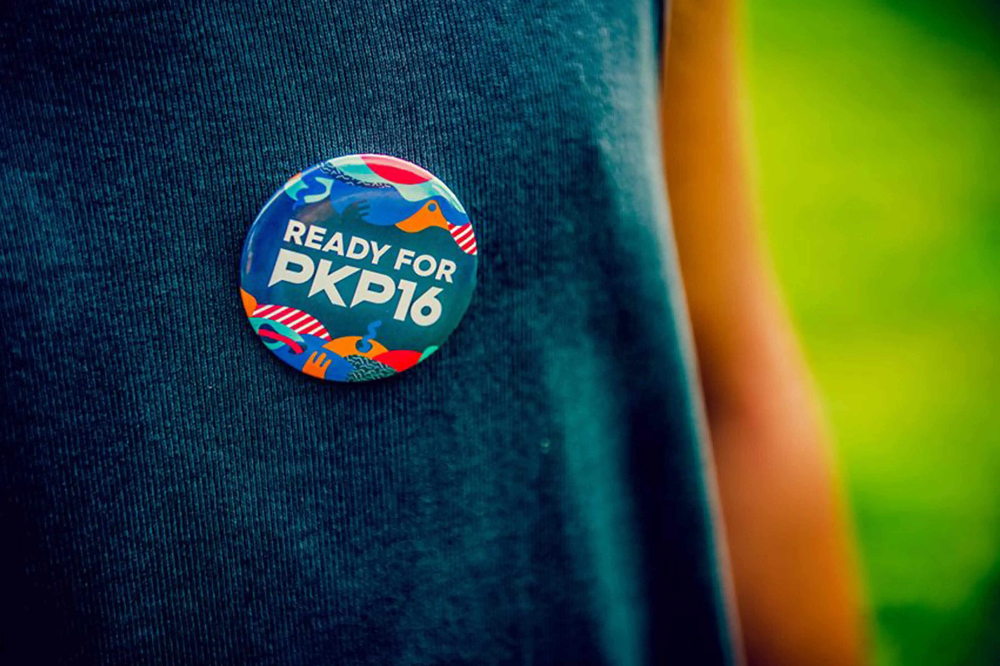
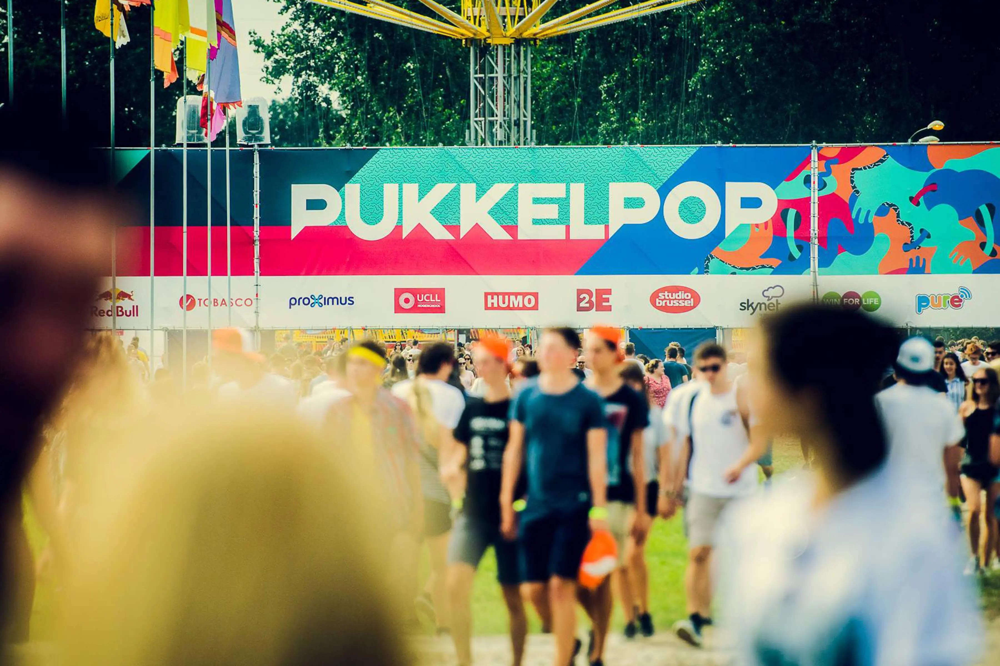
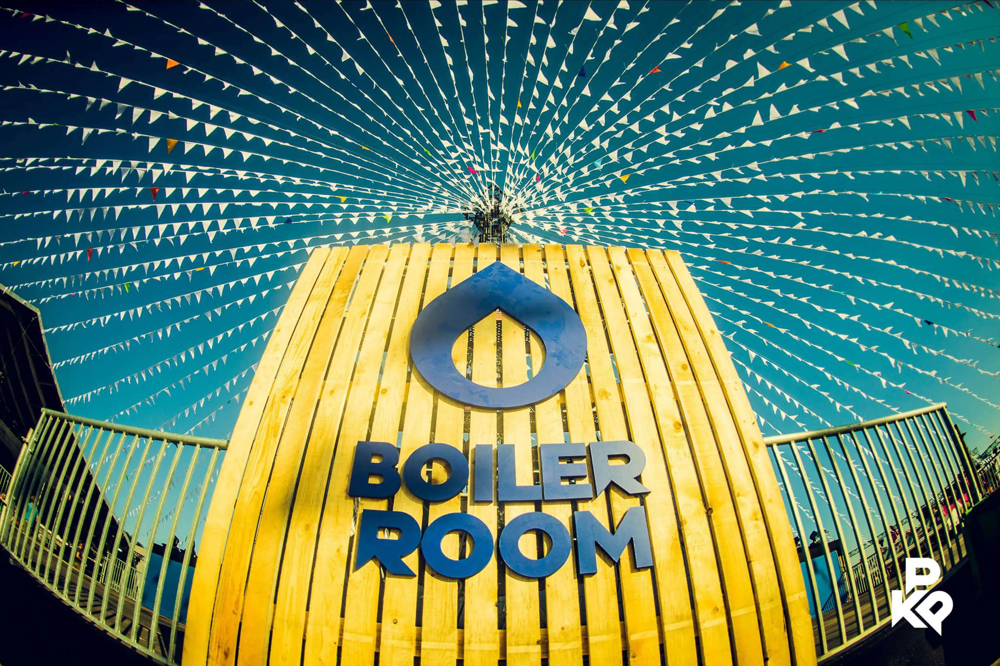
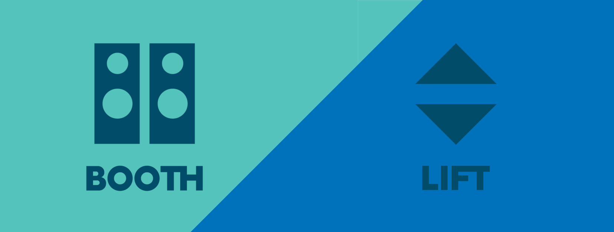
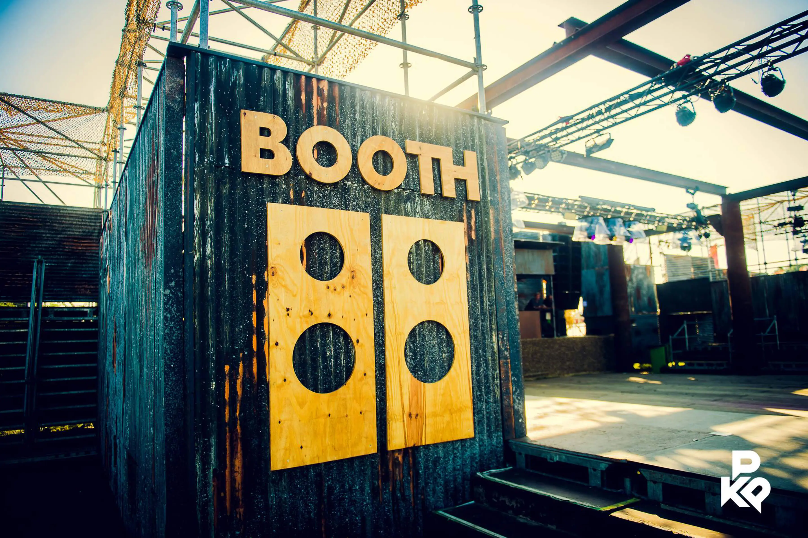
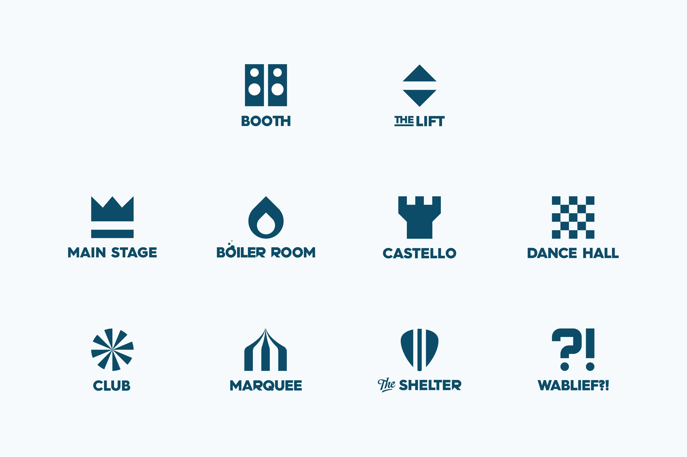

Pukkelpop 2016
augustus 2016
Brand Update
- Oprichters
- Chokri Mahassine
- Bedrijf
- Pukkelpop
- Sector
- Festivals & events
- Locatie
- Kiewit, Hasselt Belgium

Over de case
Glossy Branding Agency verzorgde de brand update voor de editie 2016 van Pukkelpop, het grootste alternatieve festival van België. Met de focus op een sterkere online en offline aanwezigheid werkten we nauwgezet een uitgebreide style guide uit die derde partijen een heldere merkrichting gaf.
Onze rol reikte verder, tot diverse aspecten van de festivalmarketing en -promotie. Glossy Branding Agency nam de art direction voor social media voor zijn rekening en bewaakte een coherente visuele identiteit op alle platformen. Daarnaast tekenden we voor de festivalwebsite, promovideo's, opvallende site branding en meeslepende videowalls.








